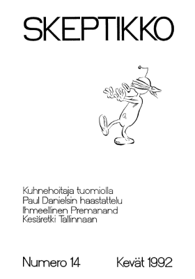
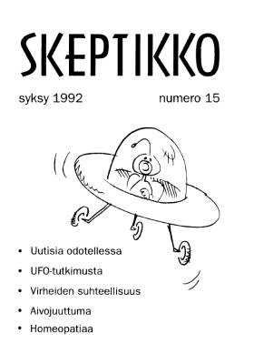

Skeptikko-lehti 1992
Ellei sinulla jo ole tietokoneellasi pdf-muodossa olevan tiedoston lukemiseen tarvittavaa
Acrobat Reader -ohjelmaa, saat sen ladattua maksutta tästä kuvakkeesta:

Skeptikko on Skepsis ry:n yleensä neljä kertaa vuodessa ilmestyvä jäsenlehti (vuonna 1991 kuitenkin ilmestyi kaksi numeroa). Tästä verkkoversiosta löydät koko lehden sisällön PDF-muodossa.
 Skeptikko 14, talvi 1992
- Matti Virtanen: Tosi vahvoja uskomuksia
- Matti Virtanen: Se tehoaa, se tehoaa
- Michael Hutchinson: Filosofinen silmänkääntäjä
- Veli Toukomies: Fantasiaa, fiktiota, faktaa
- Pekka J. Alestalo: John Allen Panlos: Numerotaidottomuus
- Skepsiksen toimintakertomus
- Toimintasuunnitelma
- Jäsenkyselyn tulokset
- Tallinaan!
- Euroepäilyä Italiassa
- English summary
 Skeptikko 15, kevät 1992
- Matti Virtanen: Uutisia odotellessa
- Karlo Kauko: UFO-tutkimus, tiedettä vai filateliaa
- Isaac Asimov: Virheiden suhteellisuus
- Matti A. Miettinen: Aivojuuttuma
- Hannu Karttunen: Lennart Lidfors: Rakkaus, lahja tähdiltä
- Olavi Pelkonen: Miksi homeopaattiset valmisteet eivät ole lääkkeitä
- CSICOP oikeudessa
- English summary
Kaikkien artikkelien © Copyright 1992 Skeptikko-lehti ja kirjoittaja.
Kirjoitukset vapaasti siteerattavissa ja levitettävissä ei-kaupallisiin tarkoituksiin, lähteeksi mainittava kirjoittajan lisäksi Skeptikko-lehti numeroineen.


{kind=link}
{kind=link}